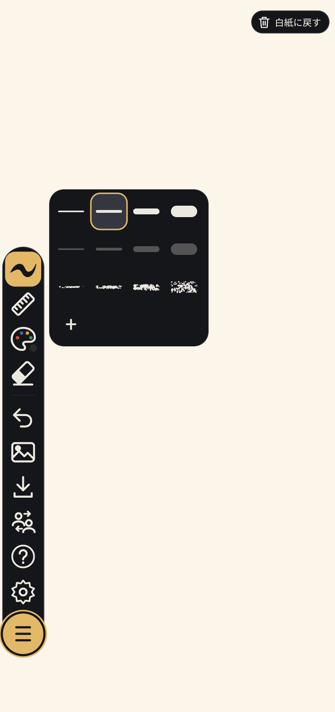
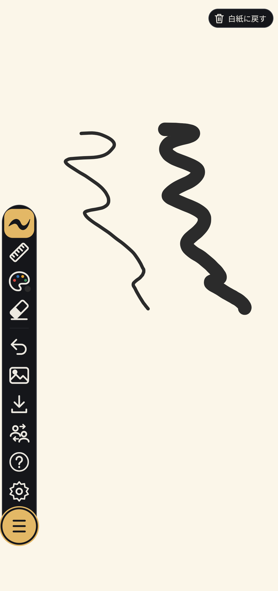
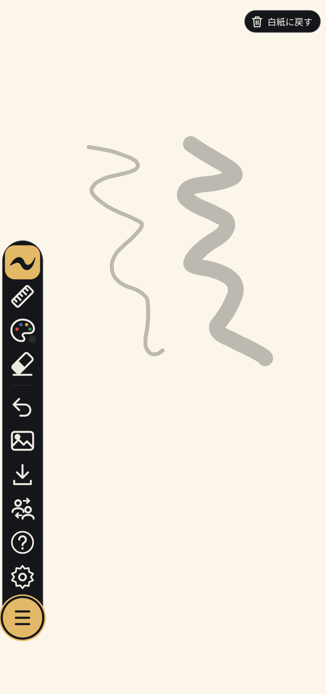
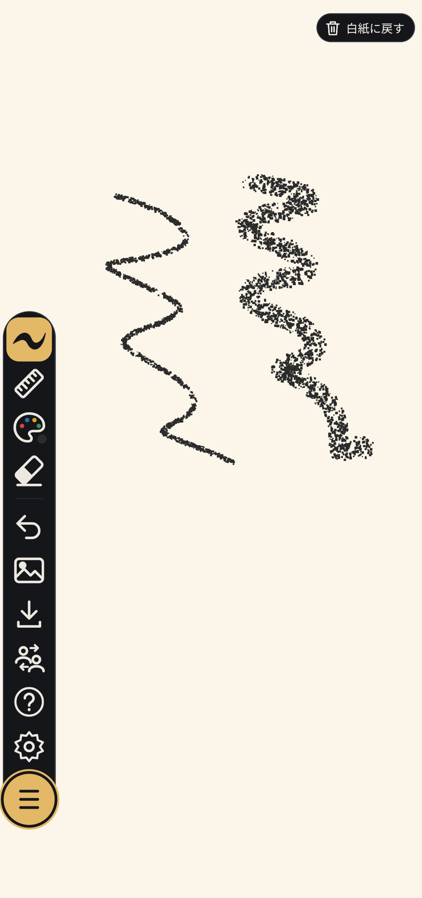
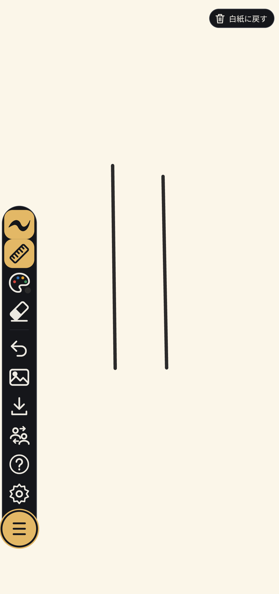
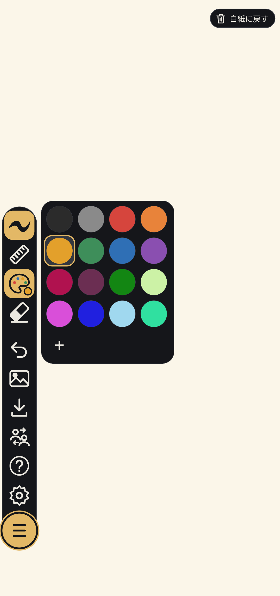
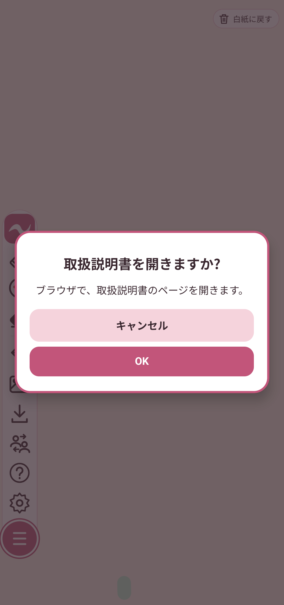

📖 はじめに（画面構成とツールバー）
「めものわ」を起動すると、目に優しいクリーム色の白紙ノートが全画面に広がります。縦型のツールバー（開閉ボタンをドラッグすると、ツールバーごと好きな場所へ動かせます）から、いつでも素早く道具を切り替えることができます。
線の太さ（ペンの種類）
タップすると、太さ（4段階）と筆の種類を選ぶポップアップが開きます。上の段がなめらかなペン、真ん中が半透明のペン、下の段がチョークです。
直線モード
オンにすると、指を引くだけで始点から終点まで歪みのないまっすぐな直線を引くことができます。
線の色
ペンの色を選びます。16色の標準色から選べます。PREMIUMでは、色を追加したり、自由な色を作ったりできます。
消しゴム
描いたストロークを指やペン先でなぞって部分的に消去します。
戻る（元に戻す）
直前に描いた1画（または消しゴム操作）を取り消して前の状態に戻します。
背景
キャンバスの背景を無地・方眼紙・端末内の好きな写真に切り替えます。
保存（画像保存・印刷）
作品を写真アルバムへ保存したり、A4比率での書き出し、透過PNG、プリンター印刷を行います。
共同編集
ネット不要！近くの端末と直接通信でつなぎ、同じノートをリアルタイムに共有します。
取扱説明書（?）
タップすると「取扱説明書を開きますか?」の確認が出ます。OKを押すと、ブラウザでこの取扱説明書のページが開きます。
設定
スキン・フォント・言語の変更、バックアップ・復元、使い方の再表示などを行います。
開閉トグル
タップするとツールバーが開いたり閉じたりして、キャンバスを広く使えます。ドラッグすると、ツールバーごと好きな場所へ動かせます。
ペンの太さと筆の種類を選ぶ
ツールバーの一番上にある「線の太さ」アイコンをタップすると、太さと筆の種類を選ぶポップアップが開きます。上の段がなめらかなペン、真ん中の段が半透明のペン、下の段がチョークで、どの段も太さを4段階から選べます。


素直でなめらかな筆跡。普段の文字メモやお絵描きの主線に最適です。細い線から太い線まで描けます。

下が透けて見える半透明の線（70%透過）。重ねると色が濃くなるので、文字の強調や色付け、塗り絵に便利です。

粉っぽくかすれる、黒板のチョークのような線。あたたかい手描き感を出したいときに。
太さのポップアップの末尾にある「＋」は、PREMIUMの機能です。太さを1〜64の範囲で細かく調整できます。
直線モードでまっすぐな線を引く
手書きではブレてしまいがちな直線も、「直線モード」を使えばワンアクションでピシッとまっすぐ引くことができます。
直線モードの使い方
- ツールバー上から3番目の「直線モード」アイコン（定規の形）をタップして有効にします（アイコンの背景が色づきます）。
- キャンバス上で指を置いて、引きたい方向へスライドします。
- 指を離すと、始点から終点まで一直線のきれいな線が確定します。

線の色を選ぶ
ツールバーの「線の色」アイコン（パレットの形）をタップすると、色を選ぶパネルが表示されます。

パレット左下の「＋」ボタンは、PREMIUMの機能です。追加のパレット（20色）、色相と明るさから選ぶ自由な色、色コードの指定ができ、太さも1〜64の範囲で細かく調整できます。無料版で「＋」を押すと、PREMIUMの案内が開きます。
白紙に戻す・やり直す
画面右上の「白紙に戻す」ボタンをタップすると、キャンバス上の描画内容を一括でクリアして最初のきれいな白紙に戻すことができます。
うっかり押し間違えて大切な絵が消えてしまわないよう、「白紙に戻す」ボタンを押した際には確認ダイアログが表示されます。
共同編集中は、ホストにだけ「白紙に戻す」ボタンが表示されます。ホストが押してOKすると、参加している全員の絵と背景が白紙に戻ります（参加者の画面にはボタンが表示されません）。
取扱説明書を開く
ツールバーの「?」ボタンをタップすると、「取扱説明書を開きますか?」の確認が表示されます。「OK」をタップすると、ブラウザでこの取扱説明書のページが開きます。「キャンセル」をタップすると、何も開かずに閉じます。設定画面の「このアプリについて」にある「取扱説明書」からも開けます。
